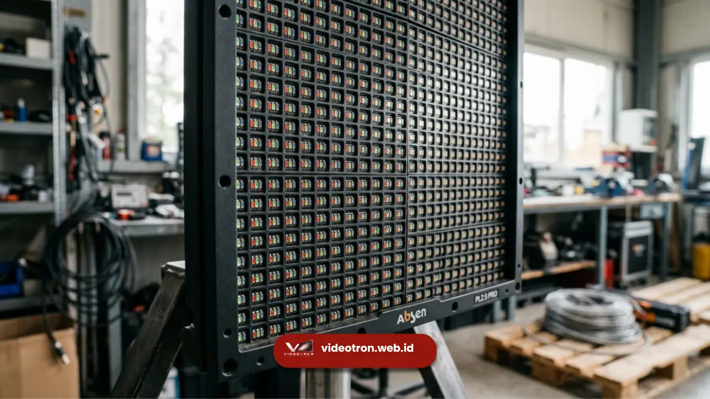

Spesifikasi teknis videotron yang paling menentukan kualitas tampilan meliputi pixel pitch, tingkat kecerahan atau brightness, refresh rate, serta ketahanan cuaca yang biasa disebut IP rating. Memahami keempat aspek ini membantu klien menentukan videotron yang sesuai dengan kebutuhan dan lokasi pemasangan.
Ringkasan Inti:
- Pixel pitch menentukan ketajaman gambar berdasarkan jarak pandang audiens.
- Brightness menentukan kejelasan tampilan, terutama untuk videotron outdoor.
- Refresh rate memengaruhi kehalusan gambar bergerak pada layar videotron.
- IP rating menunjukkan tingkat ketahanan videotron terhadap air dan debu.
- Kombinasi spesifikasi yang tepat disesuaikan dengan lokasi dan tujuan penggunaan.
Memilih videotron bukan hanya soal ukuran layar, tetapi juga memahami spesifikasi teknis yang menentukan kualitas tampilan dalam jangka panjang.
Spesifikasi yang tidak sesuai dengan kondisi lokasi dapat menyebabkan hasil tampilan kurang optimal, bahkan mempercepat kerusakan perangkat.
Panduan ini membahas empat aspek teknis utama yang perlu dipahami sebelum menentukan spesifikasi videotron.
Apa Itu Pixel Pitch pada Videotron?
Pixel pitch adalah jarak antar titik LED pada panel videotron yang diukur dalam satuan milimeter, dan menentukan tingkat ketajaman gambar yang dihasilkan.
Semakin kecil angka pixel pitch, semakin rapat titik LED yang tersusun, sehingga gambar terlihat lebih tajam meskipun dilihat dari jarak dekat.
Videotron dengan pixel pitch kecil umumnya cocok untuk ruangan indoor seperti ruang pertemuan atau lobi kantor, di mana audiens berada relatif dekat dengan layar.
Sebaliknya, videotron dengan pixel pitch lebih besar tetap dapat menghasilkan gambar jernih pada jarak pandang jauh, seperti pada instalasi outdoor di fasad gedung atau lapangan terbuka.
Berapa Tingkat Kecerahan Ideal untuk Videotron?
Tingkat kecerahan atau brightness videotron diukur dalam satuan nits, dan videotron outdoor umumnya membutuhkan tingkat kecerahan yang jauh lebih tinggi dibandingkan videotron indoor agar tetap terlihat jelas di bawah sinar matahari langsung.
Videotron indoor biasanya cukup menggunakan tingkat kecerahan standar karena kondisi pencahayaan ruangan yang lebih terkontrol.
Sementara itu, videotron outdoor perlu dirancang dengan brightness yang jauh lebih tinggi agar tampilan gambar tidak pudar meskipun terkena paparan sinar matahari secara langsung sepanjang hari.

Sistem kontrol pada videotron memengaruhi refresh rate dan kehalusan gambar.Apa Fungsi Refresh Rate pada Videotron?
Refresh rate menunjukkan seberapa sering gambar pada layar videotron diperbarui dalam satu detik, dan memengaruhi kehalusan tampilan video atau konten bergerak.
Refresh rate yang lebih tinggi menghasilkan tampilan gambar bergerak yang lebih halus dan minim kedipan.
Terutama penting jika videotron digunakan untuk menampilkan video promosi dinamis atau konten yang direkam melalui kamera, seperti pada siaran langsung acara korporat.
Mengapa IP Rating Penting untuk Videotron Outdoor?
IP rating menunjukkan tingkat ketahanan perangkat videotron terhadap debu dan air, dan menjadi spesifikasi krusial khususnya untuk videotron yang dipasang di area terbuka.
Videotron outdoor idealnya memiliki IP rating yang sesuai standar ketahanan cuaca agar mampu bertahan dari paparan hujan, kelembapan, dan debu dalam jangka panjang tanpa mengalami kerusakan pada komponen internal.
Videotron indoor umumnya tidak memerlukan tingkat IP rating setinggi videotron outdoor karena kondisi lingkungan yang lebih terkendali.
Bagaimana Menentukan Kombinasi Spesifikasi yang Tepat?
Kombinasi spesifikasi videotron yang tepat ditentukan berdasarkan lokasi pemasangan, jarak pandang audiens, serta tujuan penggunaan, baik untuk promosi, informasi publik, maupun kebutuhan event.
Untuk lokasi indoor dengan jarak pandang dekat, prioritas utama biasanya diberikan pada pixel pitch yang kecil demi ketajaman gambar.
Sebaliknya, untuk lokasi outdoor dengan jarak pandang jauh, prioritas bergeser pada tingkat kecerahan dan ketahanan cuaca agar videotron tetap berfungsi optimal dalam berbagai kondisi lingkungan.
Spesifikasi teknis videotron seperti pixel pitch, brightness, refresh rate, dan IP rating saling berkaitan dalam menentukan kualitas tampilan dan daya tahan perangkat. Menentukan kombinasi yang tepat sesuai lokasi dan tujuan penggunaan menjadi kunci agar investasi videotron memberikan hasil yang optimal.
Konsultasikan kebutuhan spesifikasi videotron Anda bersama tim vendorvideotron.web.id untuk mendapatkan rekomendasi yang sesuai dengan lokasi dan anggaran Anda.

Hawa Nadira
LED Technology Consultant dan Visual Educator
Konsultan dan spesialis solusi display digital berdedikasi tinggi yang fokus membagikan panduan edukatif mengenai penerapan teknologi layar LED videotron untuk kebutuhan interior modern di Indonesia.